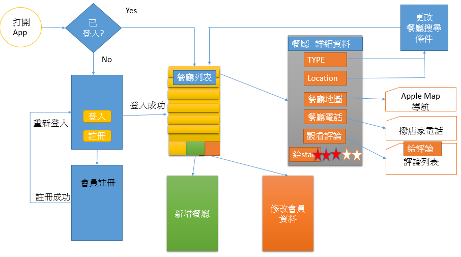

當伺服器的response回來之後，
《completionHandle》會被觸發，然後執行程式處理傳回來的資料
然而資料如何能夠串回去view來顯示?
conn()的通訊程式收到資料他怎麼知道要去哪一個view去顯示資料？
幾種想法
- 使用方法傳回要顯示的資料，在那個view呼叫這個方法，接收傳回值並顯示
很明顯，你只能呼叫通訊程式，《completionHandle》是無法抓到傳回值的
- conn()宣告成員變數，《completionHandle》處理完資料放在成員變數
view就是顯示conn().的成員變數，
但是伺服器傳回回應時《completionHandle》才會被啟動
然後修改成員變數
那view怎麼知道成員變數已經準備好了，可以抓來顯示了？
答案明顯是2，只是需要使用到ObjectBinding和publish來綁定物件和其成員變數，這個章節就是練習這個。

1. 將帳密送到伺服器驗證後，View再根據驗證結果進行顯示
- 要綁的類別宣告必須為ObservableObject
- 那些成員變數變動時要通知訂閱者，加上@Published
- init() 是建構子
- 指定vid=1
- 指定need_login的值為userDefaults的need_login，來確認app上次關閉時是否仍在登入狀態中
class conn:ObservableObject{
@Published var need_login:Bool = true
@Published var vid:Int=1
init(){
need_login=UserDefaults.standard.bool(forKey: "need_login")
vid=1
}
conn類別加入方法memRequest()
伺服器傳回結果，成功{result:successful} 失敗{result:fail}
為了解碼這個json，所以定義了RResult這個struct
struct Result:Codable{
var result:String
}
新增conn類別的memRequest()方法
func memRequest (acc:String,pwd:String){
var request = URLRequest(url: URL(string: "http://163.17.20.6/mem.php")! as URL)
request.httpMethod = "POST"
let postString = "acc=\(acc)&pwd=\(pwd)";
request.httpBody = postString.data(using: String.Encoding.utf8);
let session = URLSession.shared
let task = session.dataTask(with: request as URLRequest,completionHandler:{
data, response, error -> Void in
let json = String(data: data! , encoding: String.Encoding.utf8) ?? "{\"result\":\"fail\"}"
if let x=json.data(using: .utf8) {
let decoder = JSONDecoder()
let re = try! decoder.decode(Result.self, from: x)
print(re.result)
if re.result == "successful"{
UserDefaults.standard.set(false, forKey: "need_login")
DispatchQueue.main.async {
self.vid=1
self.need_login=false
}
}
}
})
task.resume()
}
說明如下
acc和pwd由view的textField取得
func memRequest (acc:String,pwd:String){
mem.php是伺服器帳密驗證程式成功{result:successful} 失敗{result:fail}
var request = URLRequest(url: URL(string: "http://163.17.20.6/mem.php")! as URL)
使用post方法
request.httpMethod = "POST"
要驗證的帳密放到字串
let postString = "acc=\(acc)&pwd=\(pwd)";
request.httpBody = postString.data(using: String.Encoding.utf8);
let session = URLSession.shared
let task = session.dataTask(with: request as URLRequest,completionHandler:{
data, response, error -> Void in
if let x=json.data(using: .utf8) {
let decoder = JSONDecoder()
re等於成功{result:successful} 或 失敗{result:fail}
let re = try! decoder.decode(Result.self, from: x)
如果是成功{result:successful}
if re.result == "successful"{
設定userDefaults
UserDefaults.standard.set(false, forKey: "need_login")
self.vid=1
self.need_login=false
就可以通知訂閱者
但是訂閱者牽涉到view
所以這個動作只能在main thread中作
DispatchQueue 分派工作佇列
.main 主執行緒
.async 非同步執行
DispatchQueue.main.async {
self.vid=1
self.need_login=false
}
}
}
})
task.resume()
}
在主程式建立conn的物件，當作環境物件給大家共用
import SwiftUI
import Combine
@main
struct loginApp: App {
@StateObject var uInfo=conn()
var body: some Scene {
WindowGroup {
ContentView().environmentObject(uInfo)
}
}
}
解說
import SwiftUI
import Combine
@main
struct loginApp: App {
要當環境物件的變數 要使用@StateObject 宣告，並且呼叫建構子建立物件
@StateObject var uInfo=conn()
var body: some Scene {
WindowGroup {
使用.environmentObject(uInfo)把物件帶去下一個view
ContentView().environmentObject(uInfo)
}
}
}
用published的成員變數 來綁view
struct ContentView: View {
@EnvironmentObject var uInfo:conn
var body: some View {
if (uInfo.need_login ){
LoginView()
}else{
if (uInfo.vid==1){StarView()}
}
}
}
說明
struct ContentView: View {
剛剛是建立環境物件 @StateObject var uInfo=conn()
這邊是使用 兩者比較一下差異
1 @StateObject 和 @EnvironmentObject
2 uInfo=conn()建立物件 和 uInfo:conn單純宣告
@EnvironmentObject var uInfo:conn
var body: some View {
利用uInfo.need_login 和 vid來決定 要顯示那一個view
因為是環境物件中的published成員變數
所以這兩個變數一改變，這邊就會收到通知，然後重新選擇要顯示的view
if (uInfo.need_login ){
LoginView()
}else{
if (uInfo.vid==1){SystemView()}
}
}
}
登入成功怎麼辦
struct LoginView: View {
@EnvironmentObject var uInfo:conn
按下登入時，
將帳密TextField（acc1,pwd1）取出，
當作參數呼叫環境物件的memRequest()
Button(action:{
x=true
acc2=acc1
pwd2=pwd1
uInfo.memRequest(acc: acc1, pwd: pwd1)
//uInfo.vid=1
//uInfo.need_login=false
}){
Label("登入", systemImage: "applelogo")
.foregroundColor(Color.black)
}
登出怎麼辦？
直接指定環境物件的那兩個參數
struct SystemView: View {
@EnvironmentObject var uInfo:conn
var body: some View {
VStack {
Text("登入成功，已經進入系統")
Button("登出"){
UserDefaults.standard.set(true, forKey: "need_login")
uInfo.need_login=true
uInfo.vid=0
}
}
}
}
2 作業
作業1
請完成下面APP架構
作業2
請延續第七章作業，完成下面要求
- 遠端登入、註冊和刪除帳號都要在view這邊顯示回應
- 遠端取得餐廳資料
http://163.17.20.6/log.php
會回傳如下資料，請遠端取得後顯示餐廳列表
原有的本地端餐廳資料請刪除
{"restData":[{"restaurantNames":"スシロー壽司郎","restaurantLocations":"台中市南屯區市政南一路158號","restaurantTypes":"Japanese", "restaurantImages":"cafedeadend.jpg"},{"restaurantNames":"Elephant Restaurant","restaurantLocations":"台中市西屯區西屯路二段267之1號","restaurantTypes":"Tea House","restaurantImages":"homei.jpg"},{"restaurantNames":"燒肉風間 Kazama","restaurantLocations":"台中市南屯區公益路二段171-1號","restaurantTypes":"Tea House","restaurantImages":"teakha.jpg"},{"restaurantNames":"高沐手作料理餐廳","restaurantLocations":"台中市北區太平路19巷3弄15號","restaurantTypes":"Austrian / Causual Drink","restaurantImages":"royaloak.jpg"},{"restaurantNames":"鐵克諾餐酒館","restaurantLocations":"台中市西區忠明南路329號","restaurantTypes":"French","restaurantImages":"cafeloisl.jpg"},{"restaurantNames":"元 YUAN", "restaurantLocations":"408台中市南屯區大墩十七街35號","restaurantTypes": "Bakery","restaurantImages":"petiteoyster.jpg"},{"restaurantNames": "RÊVE 黑浮咖啡","restaurantLocations":"台中市西區公益路290號","restaurantTypes":"Bakery","restaurantImages":"forkeerestaurant.jpg"},{"restaurantNames":"八豆食府壽喜燒專門店","restaurantLocations":"台中市南屯區大光街162號","restaurantTypes":"Chocolate","restaurantImages":"posatelier.jpg"},{"restaurantNames":"瓦庫燒肉 WOW COOL","restaurantLocations":"台中市中區民權路16號","restaurantTypes":"Cafe","restaurantImages":"bourkestreetbakery.jpg"},{"restaurantNames":"信川屋博多豚骨拉麵店","restaurantLocations":"台中市西區中興八巷24號","restaurantTypes":"American / Seafood","restaurantImages":"haighschocolate.jpg"},{"restaurantNames":"麵廊Meelang","restaurantLocations":"台中市南屯區公益路二段612號","restaurantTypes":"American","restaurantImages":"palominoespresso.jpg"},{"restaurantNames":"本壽司","restaurantLocations":"台中市北區太原路二段175號","restaurantTypes":"American","restaurantImages":"upstate.jpg"},{"restaurantNames":"龍之軒","restaurantLocations":"台中市北區健行路407巷1號","restaurantTypes": "Breakfast & Brunch","restaurantImages":"traif.jpg"},{"restaurantNames":"興鮮幸福鍋物","restaurantLocations":"台中市霧峰區樹仁路23號","restaurantTypes": "Coffee & Tea","restaurantImages":"grahamavenuemeats.jpg"},{"restaurantNames":"小潞屋 A Dream Road", "restaurantLocations":"台中市霧峰區四德路53號","restaurantTypes": "Coffee & Tea","restaurantImages":"wafflewolf.jpg"},{"restaurantNames":"聖地庭園複合廚房", "restaurantLocations":"台中市霧峰區中正路677號","restaurantTypes":"Latin American","restaurantImages":"fiveleaves.jpg"},{"restaurantNames":"NU PASTA 台中霧峰店","restaurantLocations":"台中市霧峰區中正路1224巷17弄1號","restaurantTypes":"Spanish","restaurantImages":"cafelore.jpg"},{"restaurantNames":"霧峰振卿肉羹大王","restaurantLocations":"台中市霧峰區樹仁路107號","restaurantTypes":"Spanish","restaurantImages": "confessional.jpg"},{"restaurantNames":"霧峰鴉片工場","restaurantLocations":"台中市霧峰區林森路762號","restaurantTypes":"Spanish","restaurantImages":"barrafina.jpg"},{"restaurantNames":"鴻利麵店","restaurantLocations":"台中市霧峰區中正路1180號","restaurantTypes":"British","restaurantImages":"donostia.jpg"}]}
會回傳如下資料，請遠端取得後顯示餐廳列表
原有的本地端餐廳資料請刪除